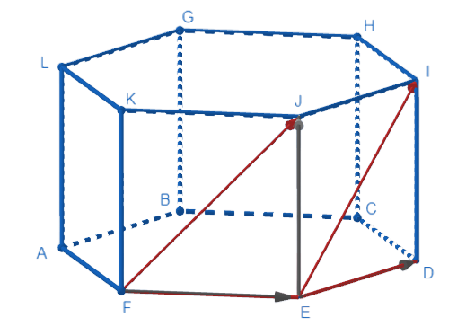

Основные методы решения стереометрических задач
Векторный метод заключается в том, что условие стереометрической задачи переводится на язык векторов (записывается в векторной форме). Затем, чтобы ответить на поставленный вопрос, необходимо провести некоторое количество алгебраических операций над векторами и перевести полученный в векторной форме результат обратно на «язык» задачи.
Данный метод требует знания теории о векторах и умения проводить операции над ними. Например, задачи, в которых ставится вопрос взаимного расположения прямых и плоскостей, можно легко решить в векторной форме с помощью условия коллинеарности и компланарности векторов. А задачи, в которых требуется найти какое-либо расстояние, угол, площадь или объем можно решить векторным методом с помощью свойств скалярного произведения векторов и условий их перпендикулярности.
В правильной шестиугольной призме ABCDEFGHIJKL, боковыми гранями которой являются квадраты, сторона основания равна 6. Найдите угол между скрещивающимися прямыми FJ и EI.
Перейдя на векторный язык, получаем, что необходимо найти угол между векторами (FJ) ⃗ и (EI) ⃗. По правилу сложения векторов разложим векторы (FJ) ⃗ и (EI) ⃗ по векторам (FE) ⃗, (EJ) ⃗ и (ED) ⃗:
В прямоугольном параллелепипеде ABCDEFGH боковые ребра равны 8, сторона основания BC=4, диагональ основания AC=4√10. Найдите угол между прямыми AF и BG.
В кубе ABCDEFGH сторона основания равна 16√3. На диагоналях AH и HF взяты точки M и P так, что AM=2/3 AH, PH=2PF. Найдите длину отрезка MP.